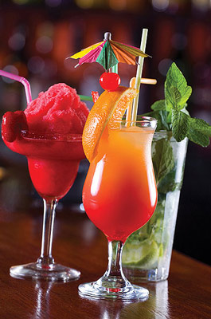
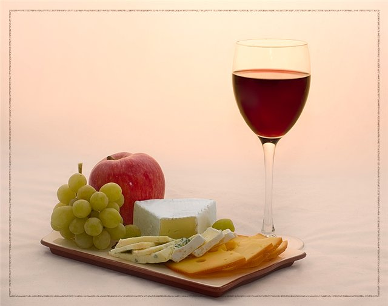
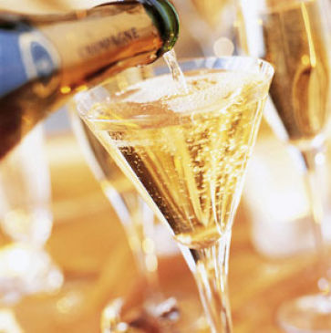
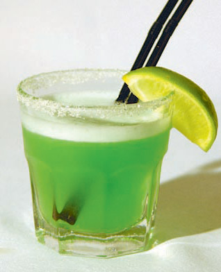
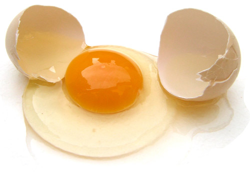
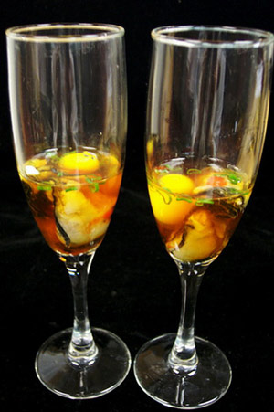
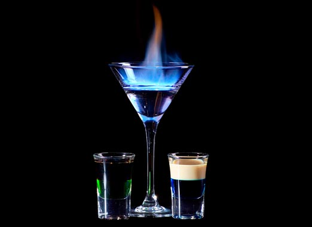
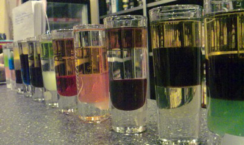

Какие бывают коктейли

Коктейли бывают разные: алкогольные и безалкогольные, горячие и горящие (которые следует пить залпом через соломинку, пока горит жидкость), холодные и замороженные.
Коктейли подают в разнообразных стаканах от больших до маленьких стопочек. Коктейли различаются по объему: одни пьются одним залпом (shot drink), другие крепостью до 47% пьются мелкими глотками (short drink), третьи пьются долго и неспешно (long drink). Одни коктейли пьют до еды (аперитивы), другие после еды – диджестивы.
При таком большом разнообразии трудно дать точную классификацию тому или иному напитку, так как порой он может относиться сразу к нескольким группам. Чтобы избежать путаницы обычно коктейли объединяют в группы по какому-то одному признаку.
Традиционная классификация коктейлей систематизирована следующим образом:
- по размеру и крепости коктейля (short drinks, long drinks, shot drinks);
- по времени употребления (аперитивы, диджестивы, круглосуточные);
- по вкусовым качествам (кисло-сладкие, сладкие, мятные и т.д.);
- по наличию в них яйца или шампанского.
1) В зависимости от размера напитка выделяют следующие типы коктейлей:
1. Короткие напитки – «шорт дринкс» (Short Drinks).
Их крепость варьируется от 17 до 45%. Объем таких напитков составляет 40-50 мл, поэтому они пьются одним глотком. К таким коктейлям относятся: Ойстеры (Oysters), Флипы (Flips), Эг-ноги (Egg-nog).

2. Длинные напитки – «лонг дринкс» (Long Drinks)Их крепость варьируется от 7 до 17 %. Объем напитков составляет 100 и более миллилитров. В них добавляется много льда. Из самого названия «длинный глоток» следует, что пить такие коктейли надо медленно, не торопясь, растягивая удовольствие. Лонг дринки пьются через соломинку. К таким коктейлям относятся: Физы (fizzes), Фиксы (fixes), Коллинзы (collins), Коблеры (cobblers). Такого вида коктейли готовятся сразу в бокале, исключения составляют физы, для приготовления которых используется шейкер.
Физы (fizzes) – это игристые освежающие коктейли, утоляющие жажду в жаркое время года. Название образовано от английского слова «tо fizz» - шипеть. В основу таких коктейлей входят крепкое спиртное, игристое вино, лимонный сок, сахарная пудра или сироп. Ингредиенты взбиваются в шейкере, затем к ним добавляется газированная вода и большое количество льда. После добавления газировки напиток не перемешивается, что позволяет сохранить растворенный в нем углекислый газ, который придает коктейлю тонизирующий эффект. Крепкие физы чаще подаются перед обедом, а слабые на десерт. Такого вида коктейли подаются в высоких бокалах цилиндрической или конической формы (Коллинз, Хайболл, Пилснер). Коктейль украшается долькой лимона, апельсина или вишенкой, подается с соломинкой. Примеры коктейлей: Джин-физ (Gin Fizz), Водка-физ (Vodka Fizz).
Фиксы (fixes) – это напитки, состоящие из крепких алкогольных напитков, сиропа или ликера, вина, а также лимонного сока. Способ их приготовления весьма прост: бокал наполняется льдом на 2/3, добавляются все компоненты, коктейль украшается долькой лимона и соломинкой. Примеры коктейлей: Бренди-фикс (Brandy Fix), Джин-фикс(Gin Fix).
Коллинзы (collins) – коктейли, в основу которых входят не содержащие сахара крепкие алкогольные напитки с добавлением лимонного сока, сахарного сиропа, содовой и минеральной воды. Не следует заменять одни указанные компоненты на другие. Коллинзы готовятся в шейкере со льдом. Затем напиток переливается в бокал Коллинз, заполненный льдом, и разбавляют содовой. Украшается долькой лимона или вишенкой. Один из самых известных коллинзов - Джон Коллинз (John Collins)
Коблеры (cobblers) или «фруктовые салаты в винном соусе». Главное их отличие от других коктейлей состоит в большом содержании фруктов. Готовят коблеры сразу в бокале, обычно это высокие стеклянные стаканы или бокалы для шампанского. Они состоят и таких же ингредиентов, что и физы и коллинзы. Одним из главных компонентов коблеров является колотый лед, заполняющий половину бокала. Именно талая вода делает крепкий острый напиток мягче и приятнее. Коблеры хорошо освежают и утоляют жажду. Бокал обычно украшают дольками лимона, вишней, клубникой и другими фруктами. Примеры коктейлей: Бренди-коблер (Brandy Cobbler), Порто-коблер (Porto Cobbler).
3. «Стреляющие» напитки или напитки «глотки» – «шот дринкс» (Shot Drinks)
Их крепость варьируется от 17 до 45%. Такие коктейли пьются залпом, так как их объем 4-6 сантилитра. Примеры коктейлей: Экватор (Equator), Запретный плод (Forbidden Fruit), Б-52, Пьяные глаза (Tipsy eyes).
2) В зависимости времени употребления коктейли бывают:

1. Аперитивы
Аперитивы – напитки, возбуждающие аппетит, их обычно пьют незадолго до обеда или ужина. Аперитив с латинского apertus означает «открывающий». Существует три вида аперитивов: ординарный, комбинированный и смешанный.
Ординарный аперитив состоит из одного напитка. Например, просто вермут, шампанское.
Комбинированный аперитив состоит из нескольких напитков, налитых в соответстующий тип посуды: водка, коньяк в рюмки, минеральная вода или сок в фужеры, вино в бокалы.
Смешанный аперитив состоит из специально приготовленных смесей разных напитков, например, несладкие коктейли.
Аперитивы подаются на небольших подносах, покрытых салфетками. В качестве аперитива из алкогольных напитков употребляются вермут, шампанское, натуральные вина, коньяк и водка.
Коктейли-аперитивы являются довольно крепкими коктейлями с большим количеством спирта, поэтому не рекомендуется их пить через соломинку. Основе таких коктейлей лежит обычно джин, коньяк, виски, ром или водка. Сопутствующими ингредиентами могут выступать вермут, портвейн, херес, иногда сиропы, ликеры и сухое вино.
К классическим аперитивам можно отнести: Сухой Мартини (Dry Martini), Белая леди (White Lady). Аперитивы средиземноморских стран Европы, вермуты и биттеры подходят как для употребления в чистом виде, так и для создания коктейлей Американо (Americano), Негрони (Negroni) и многих других. На юге Европы популярностью пользуются такие битеры, как Picon, Suze, Сатрап, также и анисовые: Ricard, Sambucca, Pernod, Ouzo.
2. Диджестивы
Диджестив (от латинского digestivus) – напиток, употребляемый после еды, особенно поле ужина, и способствующий пищеварению. Их также называют «Коктейли после ужина» (After dinner cocktails). К диджестивам относятся крепкие коктейли с различными вкусовыми оттенками. Они могут быть сладкими, кислыми, кисло-сладкими и т.д. Для их приготовления используют крепкие алкогольные напитки, вина, сиропы и ликеры, соки, мед, сливки, яйца и многое другое.
3) В отдельную группу выделяют тонизирующие коктейли. Такие коктейли бывают либо очень крепкими (30-35%), либо содержат много сока или фруктов и даже бульона. Тонизирующие коктейли также называют «Возвращающие к жизни мертвеца» (Corpse Revivers). К ним относятся: Кровавая Мэри (Bloody Mary), Дева Мария (Virgin Mary), Удар быка (Bullshot).
4) Другую группу составляют коктейли на основе шампанского.

В основном это пенящиеся прохладительные напитки, в основе которых лежат шипучие компоненты. Такие коктейли рекомендуется подавать сильно охлажденными, так как холод поддерживает длительность игристости напитка и сохраняет его вкусовые данные. Поэтому после добавления шампанского напиток нельзя перемешивать. Для коктейлей обычно используют сухое или полусухое шампанское, так как оно дольше играет, в отличие от сладкого. Подавать готовые напитки следует в высоких бокалах с длинной ножкой. Среди коктейлей на основе шампанского выделяется несколько подгрупп:- коктейли из крепких спиртных напитков с шампанским, самый известный – Шампань-коктейль (Champagne Cocktail);
- коктейли на основе ликера и шампанского, классический пример – Королевский кир (Kir Royal);
- коктейли на основе фруктовых соков и шампанского, например, Беллини (Bellini), Бакс-физ (Buck's Fizz).
5) По вкусовым качествам в отдельную группу выделяют сауэры (sours).

Сауэры – это кислые американские напитки (от английского слова «sour» - кислый), в основу которых входит лимонный сок, сахар и крепкое спиртное. Такое названия группа коктейлей получила из-за кислого вкуса, который создают цитрусы и цитрусовые соки, входящие в состав коктейля. Изначально в составе сауэров были крепкие алкогольные напитки, лимонный сок и сахарный сироп. В настоящее время при их изготовлении используются самые разнообразные соки, сиропы, наливки и ликеры. Сауэры готовятся с помощью шейкера. Украшают напиток дольками апельсина (лимона), вишней. Примеры коктейлей: Виски-сауэр (Whiskey Sour), Бренди-сауэр (Brandy Sour).6) Коктейли на основе яиц.

К таким коктейлям относятся: Ойстеры (Oysters), Флипы (Flips), Эг-ноги (Egg-nog).1. Эг-ноги (egg-nogs)
Впервые такого вида коктейль появился в Шотландии. Он состоит из крепких алкогольных напитков, сиропа и яйца. Иногда компоненты могут меняться, для их приготовления также можно использовать вино, ликер, молоко, содовую или шампанское.
Эг-ноги готовятся в шейкере или взбиваются миксером. Ингредиенты следует смешивать постепенно. Сначала взбивают желток с сиропом или ликером, затем добавляют лед, и лишь потом алкоголь и молоко. Яичный белок тоже взбивают и используют как украшение в виде «шапочки», которую посыпают измельченным мускатным орехом. Напиток подается с соломинкой. Он может быть как горячим, так и охлажденным. Примеры коктейля: Бренди-эг-ног (Brandy Egg-Nog).
2. Флипы (flips)

От английского flip – «щелчок». Изначально флипами назывались не очень крепкие напитки, представляющие собой смесь горячего подслащенного пива, небольшого количества крепкого алкогольного напитка, яйца и пряностей. Сегодня флипы – это обычно холодные напитки. В их состав входят крепкие алкогольные напитки или вино, яйцо и сироп. Яичный желток в сочетании с мускатным орехом придает флипу нежный вкус бисквита. Коктейли такого типа готовятся с помощью шейкера или миксера. Взбивать флипы следует всего лишь минуту. Украсить коктейль можно измельченным мускатным орехом или тертым шоколадом, посыпав его сверху. Пример коктейля: Порто-флип (Porto Flip).3. Ойстеры (oysters)
От английского oyster – «устрица» Ойстеры – это коктейли с яйцом. Такое название взято не случайно. Готовый коктейль похож на устрицу благодаря цельному, не растекшемуся яичному желтку, который напоминает жемчужину. От других своих собратьев ойстеры отличаются более острым вкусом, так как они состоят из острых томатных соусов, соли и перца. Из-за своей остроты их прозвали «отрезвляющими коктейлями». Чтобы приготовить такой коктейль, для начала нужно отделить белок от желтка, смешать все ингредиенты кроме желтка в шейкере или миксере. Затем содержимое следует перелить в коктейльную рюмку. Далее осторожно положить в коктейль цельный желток. Обычно желток взбрызгивают уксусом, а сам коктейль украшают листиками петрушки или другой зеленью. Напиток подается безо льда. Его пьют одним глотком, поэтому его объем не должен превышать 25 см3.
7) Горячие напитки (Hot Drinks)

Горячие напитки могут быть различного объема (от 6 сантилитра и выше), разной крепости (от 12 до 35%). В основе горячих напитков лежит кипяченое вино или обычная горячая вода. К таким напиткам относятся: грог (сахар, лимонный сок, чай, специи, алкогольный напиток), тодди (спиртное, вода или сок, сахар или мед), хот кофе (спиртное, кофе, сахар, сливки), пунш (соки, сахар, спиртное, специи), глинтвейн (вино, пряности, гвоздика, корица, фрукты), глёгг (вино, бренди, кардамон, пряности).Горячие напитки следует подавать в термостойких бокалах. При приготовлении спиртное надо лишь согреть, а не подвергать кипячению.
8) Слоистые коктейли (Rainbow)

По своему составу слоистые коктейли относятся к крепким возбуждающим аппетит коктейлям. Ингредиенты для таких коктейлей должны быть контрастными по цвету и располагаться слоями. Они не смешиваются. Слоистые коктейли называют также «коктейлями-парадоксами», так как могут сочетать в себе самые необычные оттенки. Именно разноцветная многослойность коктейля делает его таким привлекательным. Чтобы сделать слои более отчетливыми, бокал следует поставить в холодильник на 20-30 минут. Вначале наливается тяжелый густой ликер, далее по лезвию ножа наливают напиток с высоким содержанием спита (коньяк). Главный секрет приготовления заключается в правильном подборе компонентов, а также в их умелом чередовании. Каждый последующий ингредиент должен быть легче по удельному весу. Последним слоем могут выступать бренди, виски, водка, джин, ром, горькие настойки, а также сливки, молоко или различные соки. Удельный вес напитка определяется содержанием в нем сахара. Если расположить все алкогольные напитки в один ряд по убыванию, то получится следующее: сироп – крем – десертный ликер – крепкий ликер – пунш – наливка – десертные напитки – сладкие настойки – аперитив – полусладкие настойки – биттеры – водка – коньяк – джин – виски.Пить слоистые коктейли следует одним глотком, стараясь не перемешивать ингредиенты.
Существуют и другие виды коктейлей:
Джулепы (Julep) – коктейли на основе свежей мяты, состоящий из крепкого алкогольного напитка, сахарного и мятного сиропа. Их можно разбавлять содовой или минеральной водой.
Хайболл (Highbal) – любой алкогольный напиток, разбавленный минеральной водой, соком, содовой или шампанским.
Источник : http://www.koktelclub.ru/home/cocktailclass.html